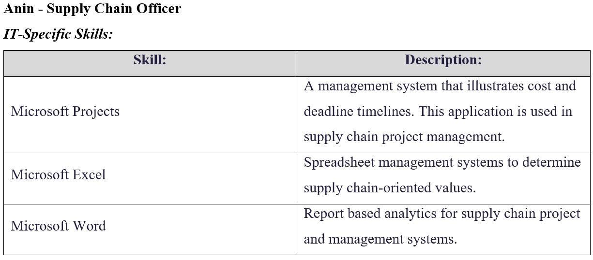

Industry Data
In this section we further explore the 'Ideal Jobs' of each individual to identify their demand, the skills (IT-specific and general) required for these jobs and the restive demand for these speicifc skills. This will all be determined by reviewing industry data to which we will also idenitfy skills in demand that fall outside the groups 'required skill set'.
Question 1 :
What are the Job Titles for your group's ideal jobs? How do each of these rank in terms of demand from employers?
In ranking each member’s ideal job in terms of employer demand we have taken into account three main factors across three different datasets for a comprehensive analysis. These are:
Average annual salary:
The first factor used to determine demand was calculated by assessing the average salary the specific ‘ideal job’ is expected to receive annually in Australia. The logic of this was that jobs with larger salaries were expected to be as such partly due to the given demand for the job at the time. This was determined using websites such as ‘PayScale’ to attain these figures. Yet, we understand demand is not the only factor that determines salary (e.g. difficulty or skill requirements) and explains why this factor only makes up one third of our analysis in ranking ideal job demand.
Current shortage & future demand:
The National Skills Commission of the Australian Government recently released the ‘Skills Priority List’ report (2021). This report lists many of the job positions available in Australia alongside the current state of each specific job in the market (shortage of jobs / no shortage) and the job’s expected future demand.
Burning Glass data (# of job listings):
The provided Burning Glass data documents provide graphs presenting jobs of the IT industry ranked based on the number of listings/posts available for a specific job title. However, the annual dataset’s only account for postings between May 2016 - March 2018, and given the fluctuations of the job market may not reflect those of the current day - nonetheless are further reasons for providing multiple measurements for ranking our ideal jobs.
Findings:
Given all the data results and ideal job industries tended to vary, the following ranking is only speculative and based on the pool of data analysed (from most to least according to assessed demand):
Albert: Chief Information Security Officer (CISO)
With an average annual salary of $177,000 AUD, the role of Chief Information Security Officer was the highest paid ideal job of the group. The Australian ‘Skills Priority List’ (2021) also deemed this job as currently in shortage with an expected strong future demand. As for the burning glass data, the role of ‘ICT security specialist’ appeared once in the May 2016- May 2017 Top Titles graph, yet remained near the bottom of the chart with around 1,354 postings found. Later years showed no sign of this role conveying a dramatic decrease in security related postings at the time. However, on the more general Burning Glass chart, ‘Top Occupations 2017-2018’, security related jobs were more prominent with 2,914 posts found for ‘Cyber /Information Security Engineer / Analyst’ and 1716 for ‘Information Security Analyst’. In all this job would rank near the top of our group given the data and overall demand.
Kelvin: Senior Full Stack Developer
The role of a Senior Full Stack Developer averaged around a $125,000 AUD annual salary, and also was deemed in shortage with a strong future demand by the National Skills Commission report (2021). The role of a Full Stack Developer did not show up on the burning glass ‘Top Titles’ chart between 2016-2017, but placed on the chart (although on the lower-end) with 286 posts between Feb 2017- Feb 2018, and furthermore 344 postings between March 2017- March 2018, showing a slight but evident increase. Full stack developers were not listed on the ‘Top Occupations’ chart, however, software developers ranked #1 and web developers #6, and whilst not the same both share many transferable skills with those of Full Stack Developers. Given all the data both Kelvin and Albert’s ideal jobs show a very similar trend for demand.
Ron: Senior Civil Engineer
At $117,000 AUD the average salary for a senior civil engineer remains relatively high amongst the group. Like those previously mentioned, this role is currently in shortage with a strong future demand. Given Burning Glass data is only applicable to IT specific jobs, data surrounding Civil engineers was not included. Yet, the ‘Australian Engineering Vacancies Report’ (2019), which identifies trends between jobs within the engineering industry, stated as a key point that “civil engineering vacancies continue to dominate the Australian engineering employment landscape” (Engineering Australia, Key points section). Furthermore, regarding the wider Australian job market, overall civil engineering is still considered to be a highly demanded job, placing 36th on a relevant article of highest demanded jobs in Australia (Indeed 2021). Overall, a job in high demand both currently and expected to be in the future, yet remains hard to gauge against those ideal jobs amongst the group specific to the IT sector.
Anin: Supply Chain Officer
Supply Chain Officers were estimated to receive $101,000 AUD annually placing it at the mid-level amongst the group in this regard. Whilst the future demand prospects for this job were strong, unlike the others this role was not currently in shortage, highlighting less of a demand than those already mentioned. Again, due to the IT specific focus of the Burning Glass data no data was found on this role here, however, a recent report ‘After the Storm’ by Burning Glass (2021) specified ‘Logistics and Supply Chain Management’ as the highest demanded field (US based) post COVID-19, and one of the few sectors to have actually grown as a result of the pandemic. This shows a higher demand for this role in the US rather than Australia but regardless an increase demand expected for future years.
Al: Desktop Support Technician
An annual salary of $61,000 AUD led the role of desktop support technician to be ranked lowest of the group in this regard and may be due to the job not being one of a leadership position like majority of the other ‘ideal jobs’. Same to that of the Supply Chain officer this role had a strong future demand and is not currently in shortage. In the Burning Glass ‘Top Occupations’ chart (2018), although not explicitly mentioned, numerous support-related roles that fell within a officer position were mentioned and placed quite high on the chart (e.g. Help Desk Officer & Network Support Officer). Overall data showed good demand for similar roles that may share transferable skills and have better salaries, yet the role is expected to grow in demand overtime.
Ivan: Data Analyst
Averaging at $72,000 AUD annually, the salary of the data analyst is slightly lower than other ideal jobs, however this could possibly be due to the fact this ideal job does not take on a senior/managerial role either. This was the only role that only had a ‘moderate’ future demand, also paired with the fact that there is currently no shortage or large demand (National Skills Commission 2021). Whilst the Data Analyst role was not specifically listed on the Burning Glass charts, other analyst related jobs, such as ‘Systems Analyst’ and ‘Service Desk Analyst’ consistently ranked near the top of every chart. Although there may be a lack of consistency amongst the job title, other analyst roles that may possess transferable skills show large promise for the future.
Question 2:
From your group's ideal jobs, you can identify a set of skills required for these jobs (we will refer to this as your group's required skill set). These can be divided into general skills (communication, problem solving, writing etc) and IT-specific skills (JavaScript, SQL, etc).
Team 12's Required Skill Set
General/Soft Skills:
- Communication Skills
- o Ability to communicate ideas effectively and clearly.
- Leadership
- o In charge of team effectiveness and outcomes.
- Reliability
- o Dealing with secure information that may have large implications if not dealt with in the correct manner.
- Strategic Planning
- o Ability to plan programs that will run smoothly following implementation.
- Collaboration
- o Ability to successfully engage with multiple stakeholders on a given task.
--------------------------------------------
General/Soft Skills:
- Leadership
- o Senior role requiring leading a team effectively.
- Creativity
- o Ability to create an engaging and unique product.
- Analytical / critical thinking
- o Ability to analyse and adopt best solution for the task at hand.
- Problem Solving
- o Ability to amend any errors/bugs that appear.
- Time Management
- o To meet client/project deadlines.
--------------------------------------------
General/Soft Skills:
- Leadership
- o Given the seniority of the role requires the ability to effectively lead a team.
- Problem Solving
- o Ability to effectively resolve issues that will appear.
- Analytical / critical thinking
- o Ability to analyse a task and come up with the best solution to pursue.
- Communication
- o Must convey complex ideas clearly.
- Strategic Planning
- o Involves methodically and critically planning each step of a project before its commencement.
--------------------------------------------

General/Soft Skills:
- Leadership
- o Given the managerial role will require leading a team effectively.
- Problem Solving
- o Issues that arise must be dealt with in a timely and thought-out manner.
- Flexibility/Adaptability
- o Things constantly change in logistics and as such this role requires individuals to be ready to adapt to changing situations.
- Communication
- o Ability to communicate big projects and ideas effectively and clearly
- Collaboration
- o Will need to collaborate and foster relationships with partners and stakeholders (e.g. manufacturers, suppliers, etc.).
--------------------------------------------
General/Soft Skills:
- Customer Service
- o Must meet client demands of each job leaving them satisfied.
- Problem Solving
- o Ability to identify and solve issues that arise.
- Active listening
- o The role requires listening to the client needs and using such information to guide possible solutions.
- Interpersonal / communication skills
- o Ability to build rapport with clients and earn their trust and respect.
- Time Management
- o Must be able to manage time and adapt if a job is taking too long.
--------------------------------------------
General/Soft Skills:
- Communication Skills
- o Ability to communicate complex data to a client clearly and in an understandable manner.
- Problem Solving
- o Ability to get past the inevitable barriers and issues that will arise.
- Critical/Analytical thinking
- o Ability to pull relevant and useful meaning out of complex datasets.
- Collaboration/Teamwork
- o Data analysts often collaborate with individuals from different roles and sectors to complete a job.
- Attention to detail
- o Must be able to identify trends and small nuances in the data.
--------------------------------------------
Question 3a: How do the IT-specific skills in your required skill set rank in terms of demand from employers?
As a collective, the team distributes a unique verity of positions. As such, some technical skills will need further analysis beyond what industry data is provided from burning glass. These include civil engineering and international studies which use a variety of applications when compared to information technologies. The following application-based skills will be mentioned below based on each group members ideal jobs.
Albert: Chief Information Security Officer (CISO):
A chief security officer (CISO) is responsible for the safety of storing data and information, preventing breaches from occurring internally. To do so, a strong understanding of programming languages is required to succeed in the field. According to burning glass 2018, the most practised languages are SQL with 17,570 overall positions offered for those knowledgeable on its usage. This is followed by the second most popular language being JavaScript with 15,336 listings with third place given to JAVA with 12,228 listings. Important to mention that a good understanding on how to use operating systems with respect to these languages such as Microsoft Windows (13,085 listings) and Linux (8,164) can play a key role for applicants to be accepted into the cybersecurity industry (Burning Glass, 2018). Furthermore, to get a better understanding of the priority’s technical skills, another source such as seek should be investigated. When observing chief security positions, a pattern can be formed highlighting JavaScript as the most optimal technical skill to have. As JavaScript was the most prevalent in current advertisement, it puts such cyber security candidates in the top priority to land a job with good fundamentals of its applications (SEEK, 2022). Lastly, industry security standards must be well understood and kept up with as these standards may change rapidly depending on what sector of security Albert may work for. These could include security Analyst (173 listings), security Architect (142 listings) or security consultant (107 listings) as examples (Burning Glass, 2018).
Kelvin: Senior Full Stack Developer:
A full stack developer job is designing user interface applications on websites. These include developing key interactions such as secure databases and servers. These interfaces must provide functionality to the consumer with relevant coding practises in android and IOS platforms for a good user experience. Some of the most important technical skills a stack developer should have been well understood fundamentals in HTML (1,005 listings), CSS (3,683 listings), JavaScript (15,336 listings) and repository Git (1,230 listings) repository systems. Furthermore, competence in server-side languages such as Python (1,150 listings), Java (2,860 listings) and .Net programming (6,838 listings) could be considered as well as the most popular database technology SQL (17,570 listings) (Hudson, 2022.). However, as industry trends may change and a new software language may become popular, attending seminars and constant market monitoring should also be required such as Kelvin could meet future market demands. This can be viewed from burning glass latest data set in March 2018, having 344 listings (Burning Glass, 2018). Furthermore, using current market listings in SEEK, the data illustrated the most desired technical languages are MySQL (549 listings) and JAVA (2,860 listings) as of 2022 (SEEK, 2022).
Ron: Senior Civil Engineer:
As mentioned, civil engineering technical skills differentiate from information technology as most programs are catered to drawing, simulating, or calculation-based applications for certain infrastructures. A civil engineer’s job is to maintain and sustain civil infrastructures. This can be done through demolition, construction, and recycling of materials to build new infrastructure or repair existing structures. For example, civil engineering branches into many fields including steel, concrete, water, structural, transport and geotechnical industries. As each individual civil field utilises different programs such as water toolkit, building information modelling (BIM), AutoCAD and Space Gass must be well understood from a graduate perspective as these key technical skills should carry over late into a civil engineer’s career. As Burning Glass could not be used for the civil field, seek highlighted that the most important skill to be integrated after graduating into a junior position is AutoCAD as it’s the most diverse technical skill that is most used in the industry (Seek, 2022; Cadgroup, 2022). However, this may be subjected to change in the coming years as BIM programs such as FormIt and Revit may become common practise in the civil engineering field (WGI, 2018). Lastly, as civil engineering is usually composed multi scaled projects involving large teams. To aid with time and cost managements a program such as Microsoft Projects could be implements to help finish tasks on time and effectively. This is the only technical skill listed in Burning Glass, having a low amount of job listings with only 73 total postings (Burning Glass 2018).
Anin: Supply Chain Officer:
A supply Chain Officers main objective is to continuously implement advancements in logistics and delivery systems. The job also includes the transfer of goods and services to consumers. Compared to IT, a supply chain officer has less technical requirements and more social soft interaction skills needed as mentioned in job descriptions in Seek. The main technical skills needed is a good management system. Therefore, applications such as Microsoft project (73 listings) as well as Microsoft excel (936 listings) are mentioned as desirable when looking at applications (Seek, 2022). Hence, a windows operating system (221 listings) should be used to run these software’s (Burning Glass, 2018). If better management systems are introduced in the future, Anin would have to learn an additional application to keep up with market trends, learning its functionality in relations to the supply chain industry.
Al: Desktop Support Technician:
A desktop support technicians’ job is to support and maintain computer systems, desktops, and peripherals of said company. The job description includes but not limited to installing, diagnosing, repairing, maintaining, and upgrading all organizational hardware and equipment while ensuring optimal workstation performance. As desktop support technician is not listed on Burning Glass, a support officer will be considered instead. A desktop support officer is also shown to have only 92 listings, illustrating its technical difficulty to be on the lower end of information technology positions. The main technical in demand according to seek is a good understanding of Microsoft windows operating system (Betterteam.2021). This can be interpreted as being able to identify difficulties customers may experience using a variety of Microsoft applications in Microsoft office (1,341 listings) along with specific company related software. As most Desktop Support could also be analysing physical hardware issues over telecommunications, internal management systems listing parts and their solutions should be considered as a part of the job description.
Ivan: Data Analyst:
A data analyst gathers and organises information regarding sales, market trends, logistics, linguistics, and other behavioural patterns. They contribute technical skills to guarantee accurate and quality data sets. Then, by analysing said data, they present the information to determine for organizations to determine the correct decisions. According to Hudson, some of the most prevalent technical skills include SQL Server (1,014 listings), Java Script (2,946 listings), XML (Extensible Markup Language) (762 listings) and an overall excellent mathematical and logistical skills. As a result, A data analyst must keep with market demands as new programs utilising different data analysis statistical fields. A similar mathematics analytical program such as R (97 listings) could be considered in these situations (Brandt and Brandt, 1998). R allows users for graphically understanding and computing of variables which is not listed as essential by Hudson. However, this would entirely depend on individual elements being processed for data analysis based on employer projects.
--------------------------------------------
Question 3b: How do the general skills in your required skill set rank in terms of demand from employers?
#1 - Communication / Interpersonal Skills
The Burning Glass data from 2017, regarding the greatest general skills in demand, showed that communication skills were extremely important and sought after, more than doubling the demand of the following skill (problem solving - 16,445 posting), with 44,367 relevant postings found (AUS + NZ based). Communication appeared as a top skill across another six other analysed reports (3 of which it ranked #1) (Burning Glass 2021; Deloitte 2021; Glassdoor Team 2021; Hays 2022; Santoriello 2021; Smith 2021). Fortunately for our groups ideal jobs, all required and favoured applicants who had good communication/interpersonal skills to some degree in each job. Although many of our ‘Ideal Jobs’ do not revolve solely around communicating with others (as opposed to something like teaching, counselling), communication still makes up a very large proportion of the work across them all. This may present in the form of discussing work with clients or team members and is essential to the job outcomes of all. This is also further reinforced by the industry interview the group had with Brian Gilbert of RealityLoop. He discussed that to contrary belief despite his role as a Web Developer, client interaction, team discussions and general meetings makes up majority of his day-to-day time and work, further reinforcing the data and importance of this general skill.
#2 - Leadership
Almost all ideal jobs of the group happened to account for leadership roles. Interestingly enough, leadership did not often appear to be a highly demanded or critical skill for employers following analysis of numerous reports. Leadership only appeared 6th as a ‘Top Skill for 2025’ in the World Economic Forum’s (2021) and 11th in Burning Glass’s report (2018). Instead reports emphasised other skills such as teamwork above this. Reasons for such may be due to the limited leadership positions physically available within organisations explaining the relative demand. Instead reports tended to prioritise skills that worked to build teams capable and adept amongst themselves rather than reliance on leadership structures. Referring back to the Interview with Brian from RealityLoop, he noted that his motivation for taking a leadership role was mainly due to the freedom he was able to have in pursuing his own business ventures rather than viewing it as a means to meet job market demands. It must be recognised that although leadership isn’t a skill in high demand it will still be an important attribute for those pursing managerial/senior roles within the group and plays as a “vital management function” (Indeed 2021, para. 1) in the workplace.
#3 - Analytical / Critical Thinking
Another general skill that appeared regularly as required for the group was the need for some form of analytical and critical thinking for the job position. Analytical/Critical thinking appeared across 5 different reports top which it consistently ranked highly (Burning Glass 2021; Deloitte 2017; HAYS 2022; Santoriello 2021; Seek 2021; World Economic Forum 2021). All ideal jobs of the group required some degree of needing to analyse a situation, model, set of data, issue or program and from such extrapolate an answer or judgement as to the best course of action to pursue. This skill was similar to that of the demand for communicational skills in that it was a key skill across numerous reports and articles, and also ranked high in terms of demand and overall importance. Some ideal jobs defined analytical thinking also in terms of the ability to break down and communicate complex ideas, often with the purpose of relaying said information to stakeholders outside of the area of expertise who therefore do not understand the technicalities to such. This seemed crucial for our groups jobs given most lie within sectors that often deal with complex ideas and concepts.
#4 - Problem Solving
Almost all ideal jobs required problem solving as a vital skill and naturally appeared on a number of demand reports (Burning Glass 2018; Deloitte 2017; HAYS 2022; Smith 2022; World Economic Forum 2021). The ability to solve and find solutions to complex issues comes naturally to many of the ideal jobs regardless of relevance to the IT industry. Fortunately burning glass data ranked problem solving as the second most in demand skill across all three datasets behind communication and really highlights the need for innovate and self-reliant employees in the workforce.
--------------------------------------------
Question 4a: What are the three highest ranked IT-specific skills which are not in your required skill set?
According to Burning Glass 2018, a comparison can be made on which three highest ranked information technology specific skills are not found in the listed individual sets. The skills will be mentioned based on their “amount listed” in the march 2018 data set formatted using a bar chart (Burning Glass, 2018).
When investigating high ranking skills not mentioned previously for this section of the report, the following technical software’s are revealed as shown below. Important to mention that Microsoft office will not be mentioned as elements such as Microsoft excel, teams and project were previously investigated. Also, as both civil engineering and supply chain officer are not considered primary skill sets based on Burning Glass. Therefore, only Microsoft projects was accounted for as a ranked information technology specific skill from the previous section.

--------------------------------------------
Question 5: Having looked at the Burning Glass data, has your opinion of your ideal job changed? Why or why not?
Ron's Reflection
After reviewing burning glass data set from the technical skill point view, my opinion has shifted. This occurred after discovering what the market values the most being SQL. Currently, the main language I have some experience with is python, as it was the only program, I have had the chance to learn during y civil engineering degree. As I plan to continue for further study in the IT industry, more emphasis on the top three programs being SQL, java script and Microsoft C# should be investigated as its currently the most popular in the market. Also, doing this research allowed me to better understand different language applications and how to utilize them in their respective field. However, as civil engineering is my current main degree, if I do decide to go to the work force, a different approach to technical civil engineering skills should be invested in instead of IT based skills. If future jobs that utilizes both civil and IT technical elements such as BIM programming development become dominate in the workforce, it should provide me a good opportunity to continue to develop potential software programming skills.
Anin's Reflection
Having read one of Burning Glass’ latest research papers, ‘After the Storm’ (2021), I have felt much more confident about pursuing my career as a Supply Chain Officer. The report stated how supply chain and logistics management has become one of the most highly demanded fields following the Covid-19 pandemic, given the increased demand for goods. However, I must keep in mind that this data is US based and does exactly reflect the Australian job market. Yet this fortunately coincides with my ideal job listing and goal to work internationally. Furthermore, I have recognised this surge in logistics demand is not permanent and demand may fluctuate in the coming years. However, I am reassured looking at the National Skills Commission (2021) data, which predicts my job role to be in strong demand in future years. Overall data regarding the future of the Australian job market additionally emphasised the importance of the IT sector and the inevitable growth/demand of this industry in the future. This has made me consider possibly branching out and adopting transferable skills relevant to the IT industry to better prepare me for future uncertainties. Regarding skills I am a lot more aware of the variety of skills and their respective demand in industry, reassured by the fact that many of high demand coincide with my role. The data has also made me a lot more aware of what skills I need to bring attention to (such as creativity and flexibility), and also to the fact that many of these soft skills are highly transferable across jobs and industries. This works as a motivating factor to actively work on improving these neglected but vital skills.
-----------------------------
References
Betterteam.2021. Desktop Support Technician Job Description. [online] Available at: https://www.betterteam.com/desktop-support-technician-job-description.
BRANDT, S. & BRANDT, S. 1998. Data analysis, Springer.
Bakhshi, H, Downing, J, Osborne, M & Schneider, P 2017, The Future of Skills Employment 2030, Pearson & Nesta, London.
Burning Glass 2017, Top Titles - May 25, 2016 - May 24, 2017, company report, Burning Glass, viewed 17 April 2022.
Burning Glass 2018, Top Titles - Mar. 24, 2017 - Mar. 23, 2018, company report, Burning Glass, viewed 17 April 2022.
Burning Glass 2018, Top Titles - Feb. 14, 2017 - Feb. 13, 2018, company report, Burning Glass, viewed 17 April 2022.
Burning Glass 2018, Top Burning Glass Occupations (BGTOCCs) - Mar. 01, 2017 - Feb. 28, 2018, company report, Burning Glass, viewed 18 April 2022.
Burning Glass 2018, Distribution of Experience Requirements for a Skill or Credential - Dec. 24, 2017 - Mar. 23, 2018, company report, Burning Glass, viewed 26 April 2022.
Burning Glass 2018, Skills in Greatest Demand (Baseline Skills) - Mar. 01 2018 - Feb. 28, 2018, company report, Burning Glass, viewed 20 April 2022.
Burning Glass 2018, The New Foundational Skills of the Digital Economy, company report, Burning Glass, viewed 23 April 2022, < https://www.burning-glass.com/research-project/new-foundational-skills/ >.
Burning Glass 2021, After the Storm : The Jobs and Skills that will Drive the Post-Pandemic Recovery, company report, Burning Glass, viewed 23 April 2022, < https://www.burning-glass.com/research-project/after-storm-recovery-jobs/ >.
Burning Glass 2021, After the Storm: The Jobs and Skills that will Drive the Post-Pandemic Recovery, company report, Burning Glass, viewed 23 April 2022, < https://www.burning-glass.com/research-project/after-storm-recovery-jobs/ >.
Cadgroup. (2022). Autocad Software - Buy, Training & Support | Cadgroup Australia. [online] Available at: https://www.cadgroup.com.au/autocad/
Deloitte 2017, Soft Skills for Business Success, Deloitte.
Deloitte 2021, Australia’s Digital Pulse 2021, company report, Deloitte, viewed 25 April 2022, < https://www2.deloitte.com/au/en/pages/economics/articles/australias-digital-pulse.html >.
Department of Industry, Science, Energy and Resources 2018, Australia’s Tech Future, viewed 24 April 2022, < https://www.industry.gov.au/data-and-publications/australias-tech-future/australias-tech-future >.
Engineers Australia 2019, Australian engineering vacancies report, Industry report, Engineers Australia, viewed 25 April 2022, < https://www.engineersaustralia.org.au/sites/default/files/resource-files/2019-08/Engineering%20Vacancies%20Report%20June%202019.pdf >.
Glassdoor Team 2021, ‘Top Skills That Employers Look For by Category’, Glassdoor, blog post, 29 June, viewed 26 April 2022, < https://www.glassdoor.com/blog/guide/skills-list/ >.
HAYS 2022, Hard Hitting Soft Skills, company report, HAYS, viewed 24 april 2022, < https://www.hays.com.au/documents/276732/1102429/Soft+Skills+Guide_AU.pdf >.
Hudson Australia. 2022. Full Stack Developer Job Description | Hudson. [online] Available at: https://au.hudson.com/employers/recruitment/technology-it/full-stack-developer-job-description/#:~:text=The%20primary%20responsibility%20of%20a.
Hudson Australia. 2022. Employer Recruitment Services | Hudson Australia. [online] Available at: https://au.hudson.com/employers/.
Indeed 2021, What Is the Importance of Leadership?’, Indeed, viewed 26 April 2022, < https://www.indeed.com/career-advice/career-development/importance-of-leadership >.
Indeed 2021, What Jobs Are in Demand in Australia?, Indeed, viewed 25 April 2022, < https://au.indeed.com/career-advice/finding-a-job/what-jobs-are-in-demand-in-australia >.
Isco, C. (2015). SAP Program – What is SAP Software and How to Use It? [online] ERProof. Available at: https://erproof.com/sap-program/#:~:text=SAP%20program%20is%20a%20sequence.
Kaffah, A 2020, Top 15 Most In-demand Job Skills in Australia 2020, According to LinkedIn, Excel Education, viewed 24 April 2022, < https://www.e2studysolution.com/news/top-15-most-in-demand-job-skills-in-australia-2020-according-to-linkedin/ >.
National Skills Commision 2021, Skills Priority List, Australian Government.
Recruiting Resources: How to Recruit and Hire Better. (2017). Data Analyst job description template | Workable. [online] Available at: https://resources.workable.com/data-analyst-job-description.
Seek 2021, Recruiters reveal: Top 5 in demand skills and why, Seek, viewed 24 April 2022, < https://www.seek.com.au/career-advice/article/recruiters-reveal-top-5-in-demand-skills-and-why >.
SEEK (2022). SEEK - Australia’s no. 1 jobs, employment, career and recruitment site. [online] SEEK. Available at: https://www.seek.com.au/.
Smith, M 2021, ‘The top 3 skills employers are looking for in 2022, according to career experts’, CNBC, 21 January, viewed 25 April 2022, < https://www.cnbc.com/2022/01/21/the-top-3-skills-you-need-to-land-a-job-in-2022-according-to-career-experts.html >.
Strack, R, Kaufman, E, Kotsis, A, Sigelman, M, Restuccia, D & Taska, B 2019, What’s Trending in Jobs and Skills, BCG & Burning Glass.
WGI. (2018). 10 Software Programs To Know In Civil Engineering. [online] Available at: https://wginc.com/10-software-programs-to-know-in-civil-engineering/#:~:text=1.
World Economic Forum 2020, The Future of Jobs Report 2020, World Economic Forum.